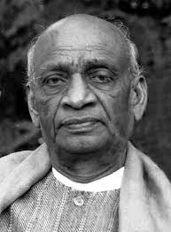
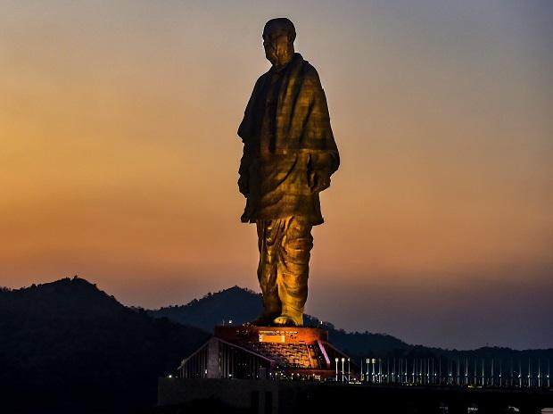

“Take to the path of dharma – the path of truth and justice. Don't misuse your valour. Remain united. March forward in all humility, but fully awake to the situation you face, demanding your rights and firmness."

Biography

Vallabhbhai Patel, in full Vallabhbhai Jhaverbhai Patel, byname Sardar Patel (Hindi: “Leader Patel”), (born October 31, 1875, Nadiad, Gujarat, India—died December 15, 1950, Bombay [now Mumbai]), Indian barrister and statesman, one of the leaders of the Indian National Congress during the struggle for Indian independence. During the first three years of Indian independence after 1947, he served as deputy prime minister, minister of home affairs, minister of information, and minister of states.
National Unity Day or Rashtriya Ekta Diwas is celebrated on October 31 since 2014. The day is observed with patriotic events to mark the birth anniversary of Sardar Vallabhbhai Patel – the man who played an important role in the unification of India. He is popularly known as the “Iron Man of India”